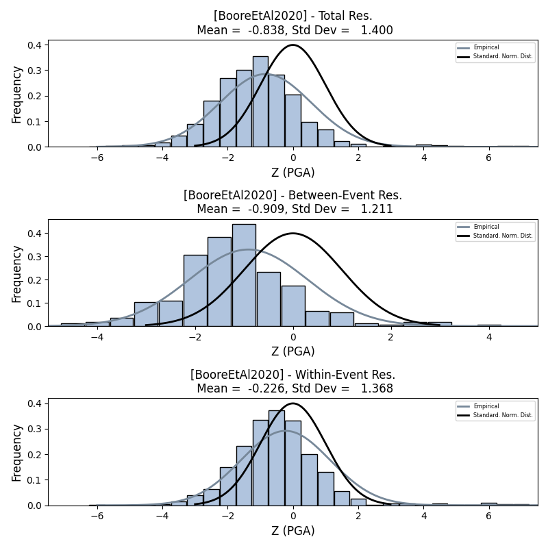
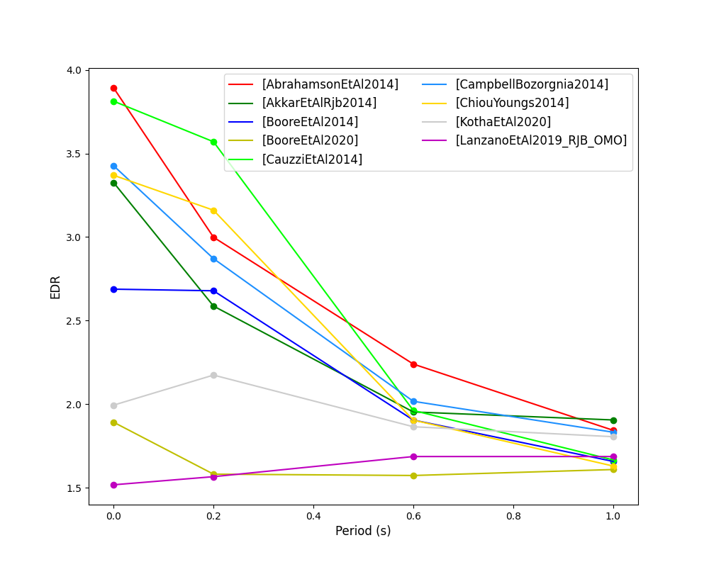
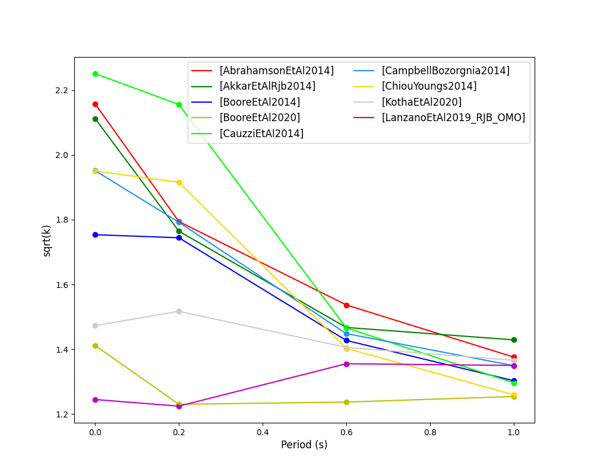
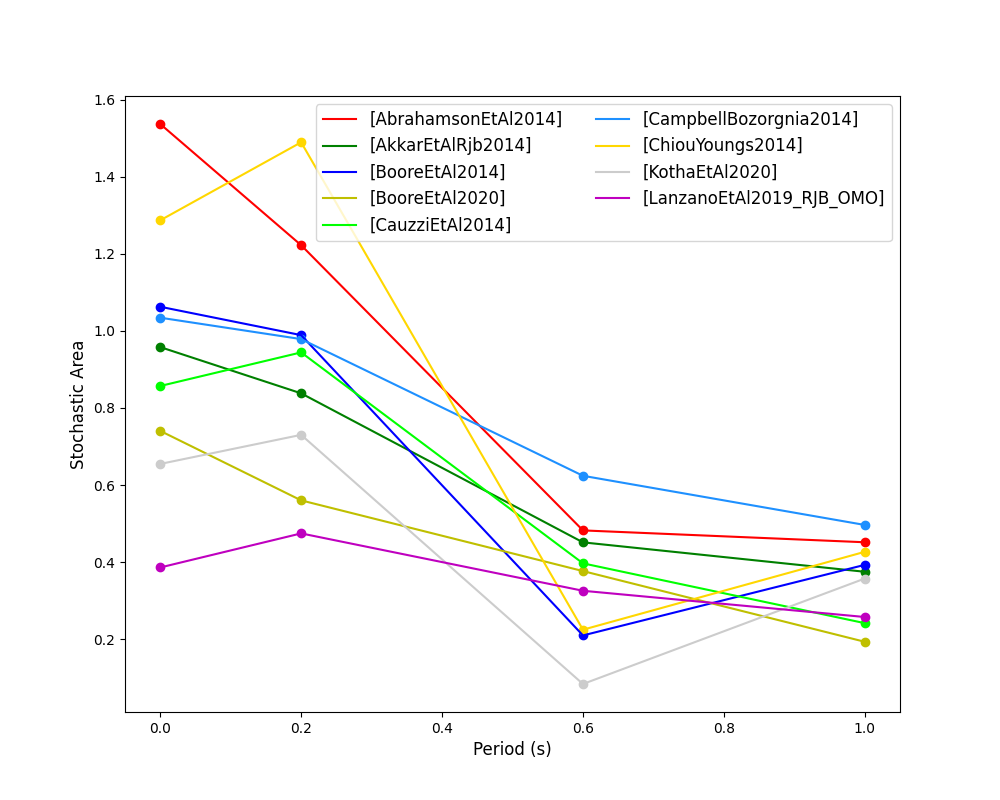
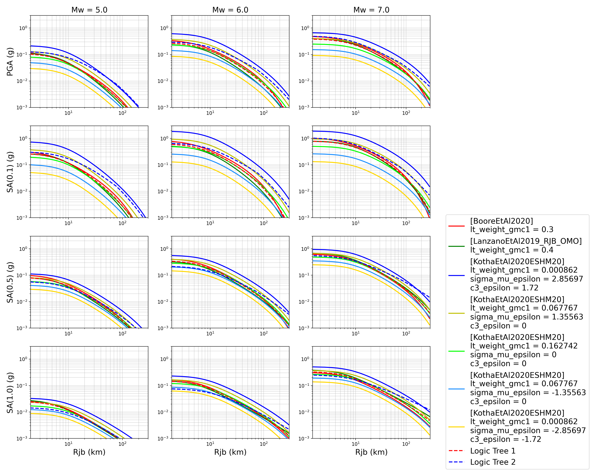
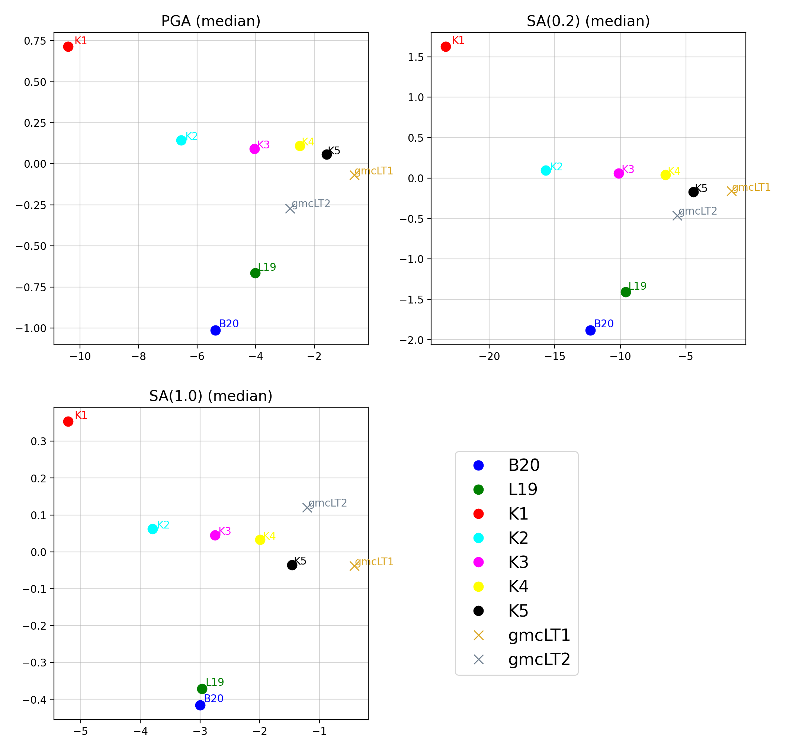

Strong-Motion Tools (smt) module
The Strong-Motion Tools module contains capabilities for (1) computation, plotting and distillation of ground-motion residual distributions (including single station residual analysis and statistical scoring metrics) and (2) comparison of GMPE behaviours for highly-customisable ground-shaking scenarios (which importantly, consider the finiteness of ruptures rather than using point sourcess).
A set of demo analyses with complete inputs and scripts for utilising the capabilities documented here are available within oq-mbtk\openquake\smt\demos.
Please note that this documentation assumes an elementary knowledge of ground-motion modelling/characterisation and residual analysis. Therefore, this documentation’s purpose is to facilitate the application of the smt by a user who is already familiar with the underlying theory. References are provided throughout.
Performing a Residual Analysis
The smt provides capabilities (parsers) for converting a provided dataset into metadata that can be subsequently used in a residual analysis.
The inputted dataset usually comprises of a ground-motion record flatfile. Many seismological institutions provide flatfiles of processed ground-motion records. These flatfiles often slightly differ in format, but generally follow a template of a CSV file in which each row represents a single ground-motion record, that is, a recording of the observed ground-motion at a single station. Each record contains information for (1) the associated earthquake (e.g. moment magnitude, hypocentral location, focal depth), (2) the associated site parameters (e.g. shear-wave velocity in the upper 30m of a site (Vs30)) and (3) ground-motion intensity values for various intensity measures (e.g. peak-ground acceleration (PGA), peak-ground velocity (PGV), spectral acceleration (SA) for various spectral ordinates).
Within a residual analysis, the information provided in each ground-motion record is used to evaluate how closely a selection of GMPEs predict the observed ground-motion. The ground-motion records within a flatfile considered in a residual analysis will usually consist of earthquakes from the same region and of the same tectonic region type.
When computing the expected ground-motions by each GMPE, the SMT leverages the OpenQuake Engine’s capabilities to construct a finite rupture for each event from the available information for each earthquake, from which the distance types required for each GMPE (e.g. rjb, rrup) can be computed relative to each site (i.e. station) in the flatfile if missing for the given record. NOTE: The distance metrics in the flatfile will inherently be the result of a different finite rupture from that modelled within OpenQuake Engine for distance metric computation - if the user requires complete consistency between the considered distance metrics, the user can just remove all distance metrics provided apriori within the inputted flatfile/ground-motion database to ensure all of the metrics are computed using OpenQuake Engine instead.
Parsers are provided in the smt for the most widely used flatfile formats (e.g. ESM, NGAWest2). The currently available parsers within the smt module can be found in oq-mbtk\openquake\smt\residuals\parsers. Some of the parsers here can read in non-flatfile format ground-motion databases - e.g. the ASADatabaseMetadataReader (found in oq-mbtk\openquake\smt\residuals\parsers\asa_database_parser.py) can be used to parse ASA format files to construct an equivalent ground-motion database.
In this example, we will consider the ESM (Engineering Strong-Motion database) 2018 format parser for the parsing of a subset of the ESM 2018 flatfile comprising of active shallow crustal earthquakes from Albania and the surrounding regions. The example residual analysis considered here consequently focuses on identifying the most appropriate GMPEs for predicting ground-motions generated from active shallow crustal earthquakes in Albania.
Parsing a Ground-Motion Flatfile into Metadata
Herein we provide a brief description of the various steps for the parsing of the ESM18 example flatfile. Note that we use the symbol > as the prompt in a terminal throughout the smt documentation, hence every time you find some code starting with this symbol this indicates a command you must type in your terminal.
First we must import the
ESMFlatfileParserand the required python modules for managing the output directories:> # Import required python modules > import os > import shutil > from openquake.smt.residuals.parsers.esm_flatfile_parser import ESMFlatfileParser
Next we need to specify the base path, the flatfile path and the database output location:
> # Specify base path > DATA = os.path.abspath('') > > # Specify flatfile paths > flatfile = os.path.join(DATA, 'demo_flatfile.csv') > > # Specify metadata output location > database = os.path.join(DATA, 'metadata') > > # If the metadata already exists first remove > if os.path.exists(database): > shutil.rmtree(database)
Now we can parse the metadata from the ESM 2018 flatfile using the
ESMFlatfileParserwith the autobuild class method:> # Specify metadata database ID and metadata database name: > DB_ID='000' > DB_NAME='ESM18_Albania' > > # Parse flatfile > parser = ESMFlatfileParser.autobuild(DB_ID, DB_NAME, database, flatfile)
The flatfile will now be parsed by the
ESMFlatfileParser, and a pickle (.pkl) file of the metadata (the parsed ground-motion database) will be outputted in the specified output location. We can now use this metadata to perform a GMPE residual analysis.
Computing the Ground-Motion Residuals
Following the parsing of a flatfile into a pickled ground-motion database object, we can now specify the inputs for the performing of a residual analysis. Residual analysis compares the predicted and expected (i.e. observed) ground-motion for a combination of source, site and path parameters to evaluate the performance of GMPEs. Residuals are computed using the mixed effects methodology of Abrahamson and Youngs (1992), in which the total residual is split into an inter-event component and an intra-event component. Abrahamson and Youngs (1992) should be consulted for a detailed overview of ground-motion residuals.
We can specify the inputs to perform a residual analysis with as follows:
We can specify the GMPEs we want to evaluate, and the intensity measures we want to evaluate each GMPE for as a
gmpe_listand animt_listwithin lists:> # Specify some GMPEs and intensity measures within a list > gmpe_list = ['AbrahamsonEtAl2014', > 'AkkarEtAlRjb2014', > 'BooreEtAl2014', > 'BooreEtAl2020', > 'CauzziEtAl2014', > 'CampbellBozorgnia2014', > 'ChiouYoungs2014', > 'KothaEtAl2020', > 'LanzanoEtAl2019_RJB_OMO'] > imt_list = ['PGA', 'SA(0.2)', 'SA(0.6)', 'SA(1.0)']
We can also specify the GMPEs and intensity measures within a
.tomlfile. The.tomlfile method permits easier specification of additional parameters accepted by some GMMs compared to when specifying them in lists of strings as demonstrated above.The additional input parameters which are specifiable for certain GMPEs are available within their corresponding GMPE modules (the
.pyGMM files found inoq-engine\openquake\hazardlib\gsim). The capabilties of ModifiableGMPE are primarily contained withinoq-engine\openquake\hazardlib\gsim\mgmpe\modifiable_gmpe.py.The
.tomlfile for specifying GMPEs and intensity measures to consider within a residual analysis should be specified as follows:[models.AbrahamsonEtAl2014] [models.AkkarEtAlRjb2014] [models.BooreEtAl2014] [models.BooreEtAl2020] [models.CauzziEtAl2014] [models.CampbellBozorgnia2014] [models.ChiouYoungs2014] [models.KothaEtAl2020] [models.LanzanoEtAl2019_RJB_OMO] # Examples below of how some GMPEs not considered in this residual analysis # with additional parameters can be specified within the SMT Comparison toml [models.AbrahamsonGulerce2020SInter] region = "CAS" # String representation in a list of GMMs would be "[AbrahamsonGulerce2020SInter]\nregion='CAS'" [models.NGAEastUSGSGMPE] gmpe_table='nga_east_Frankel.hdf5' [imts] imt_list = ['PGA', 'SA(0.2)', 'SA(0.6)', 'SA(1.0)']
Following specification of the GMPEs and intensity measures, we can now compute the ground-motion residuals using the Residuals module’s capabilities.
We first need to get the metadata from the parsed
.pklfile (stored within the metadata folder):> # Import more required python modules > import pickle > import openquake.smt.residuals.gmpe_residuals as res > import openquake.smt.residuals.residual_plotter as rspl > > # Create path to parsed database's metadata file > metadata = os.path.join(metadata_directory, 'metadatafile.pkl') > > # Load database metadata > sm_database = pickle.load(open(metadata, "rb")) > > # If the output folder already exists delete, then create output folder > out_folder = os.path.join(BASE, 'residuals') > if os.path.exists(out_folder): > shutil.rmtree(out_folder) > os.mkdir(out_folder)
Now we compute the residuals using the specified GMPEs (normalising by each GMPE’s sigma) and intensity measures for the metadata we have parsed from the flatfile:
Note that here
residis the residuals object which stores (1) the observed ground-motions and associated metadata from the parsed flatfile, (2) the corresponding predicted ground-motion per GMPE and (3) the computed residual components per GMPE per intensity measure. The residuals object also stores the gmpe_list (e.g. resid.gmpe_list) and the imt_list (resid.imts) if these inputs are specified within a.tomlfile.> # Compute residuals using GMPEs and intensity measures specified in lists > comp='Geometric' # Use the geometric mean of H1 and H2 as the observed values to compare against the GMPE predictions > resid = res.Residuals(gmpe_list, imt_list) > resid.compute_residuals(sm_database, component="Geometric") # horizontal component definition can also be set to 'rotD50', rotD00','rotD100' etc > > # OR compute residuals using GMPEs and intensity measures specified in .toml file > resid = res.Residuals.from_toml(toml_fname) > resid.compute_residuals(sm_database) > > # OR compute residuals using GMPEs specified in a GMC XML and intensity measures specified in a list > resid = res.Residuals.from_xml(xml_fname, imt_list) > > # We can export the residuals to a text file > resid.export_residuals(txt_fname)
Plotting of Residuals
Now we have computed the residuals, we can generate various basic plots describing the residual distribution.
We can generate plots of the probability density function plots for total, inter- and intra-event residuals to compare the residual distributions to standard normal distributions.
Probability density function plots can be generated as follows:
> # Make residual pdf plot for givne gmpe and imt > rspl.ResidualPlot(resid, gmpe, imt, fname)
- Residual distribution plot for Boore et al. 2020 and PGA:
- 
We can also plot the means and standard deviations of the distributions of the residuals over all considered periods at once:
> # Plot means and stddevs of all GMPEs residual distributions w.r.t. period: > rspl.plot_residual_means_and_stds_with_period(resid, fname) > > # Generate CSV of this information > rspl.residual_means_and_stds_table(resid, fname)
- Plot of residual distributions versus spectral acceleration:
Plots for residual trends (again for total, inter- and intra-event components) with respect explanatory variables (magnitude, focal depth, distance and vs30) can also be generated in a similar manner. Here we will demonstrate for magnitude:
> # Plot each component of residuals w.r.t. rrup distance > rspl.ResidualWithDistance(resid, gmpe, imt, fname, distance_type="rrup")
- Residuals w.r.t. rrup for Boore et al. 2020 and PGA:
GMPE Performance Ranking Metrics
The smt contains implementations of several published GMPE ranking methodologies, which allow additional inferences to be drawn from the computed residual distributions. Brief summaries of each ranking metric are provided here, but the corresponding publications should be consulted for more information.
The Loglikelihood Method (Scherbaum et al. 2009)
The loglikelihood method is used to assess information loss between GMPEs compared to the unknown “true” model. The comparison of information loss per GMPE compared to this true model is represented by the corresponding ground-motion residuals. A GMPE with a lower LLH value provides a better fit to the observed ground-motions (less information loss occurs when using the GMPE). It should be noted that LLH is a comparative measure (i.e. the LLH values have no physical meaning), and therefore LLH is only of use to evaluate two or more GMPEs.
LLH values per GMPE aggregated over all (specified) intensity measures, LLH-based model weights and LLH per intensity measure can be computed as follows:
> # Get LLH values for given GMPEs and intensity measures (gets LLH per IMT and also aggregated over IMTs) > res.get_llh_values(resid, imt_list) > > # Generate a CSV table of LLH values per GMPE and per IMT > rspl.llh_table(resid, fname) > > # Generate a CSV table of LLH-based model weights for a GMPE logic tree > rspl.llh_weights(resid, fname) > > # Plot LLH values per GMPE vs IMT > rspl.plot_llh_with_period(resid, fname) > > # Write GMC XML which uses weights based on LLH > res.export_gmc_xml(weight_metric="LLH", fname)
- Loglikelihood versus period plot for considered GMPEs:

Euclidean Distance Based Ranking (Kale and Akkar, 2013)
The Euclidean distance based ranking (EDR) method considers the probability that the absolute difference between an observed ground-motion and a predicted ground-motion is less than a specific estimate, and is repeated over a discrete set of such estimates (one set per observed ground-motion per GMPE per the specified intensity measure). The total occurrence probability for such a set is the modified Euclidean distance (MDE). The corresponding EDR value is computed by summing the MDE (one per observation), normalising by the number of observations and then introducing an additional parameter (Kappa) to penalise models displaying a larger predictive bias (here kappa is equal to the ratio of the Euclidean distance between obs. and pred. median ground-motion to the Euclidean distance between the obs. and pred. median ground-motion corrected by a predictive model derived from a linear regression of the observed data - the parameter sqrt(kappa) therefore provides the performance of the median prediction per GMPE).
EDR score, the normal distribution of modified Euclidean distance (MDE Norm) and sqrt(k) (k is used henceforth to represent the median predicted ground-motion correction factor “Kappa” within the original methodology) per GMPE aggregated over all considered intensity measures, or per intensity measure can be computed as follows:
> # Get EDR, MDE Norm and MDE per GMPE aggregated over all IMTs > res.get_edr_values(resid) > > # Get EDR, MDE Norm and MDE per GMPE per IMT > res.get_edr_wrt_imt(resid) > > # Generate a CSV table of EDR values per GMPE and per IMT > rspl.edr_table(resid, fname) > > # Generate a CSV table of EDR-based model weights for a GMPE logic tree > rspl.edr_weights(resid, fname) > > # Plot EDR score, MDE norm and sqrt(k) vs IMT > rspl.plot_edr_with_period(resid, fname) > > # Write GMC XML which uses weights based on EDR > res.export_gmc_xml(weight_metric="EDR", fname)
- EDR rank versus period plot for considered GMPEs:
- 
- EDR median correction factor versus period for considered GMPEs:
- 
- MDE versus period for considered GMPEs:
Stochastic Area Based Ranking (Sunny et al. 2021)
The stochastic area ranking metric considers the absolute difference between the integrals of the cumulative distribution function of the GMPE and the empirical distribution function of the observations. A smaller value is representative of a better fit between the GMPE and the observed ground-motions.
> # Get stochastic area metric per GMPE and per IMT > res.get_sto_wrt_imt(resid) > > # Generate a CSV table of stochastic area values per GMPE and per IMT > rspl.sto_table(resid, fname) > > # Generate a CSV table of stochastic area-based model weights for a GMPE logic tree > rspl.sto_weights(resid, fname) > > # Plot stochastic area vs IMT > rspl.plot_sto_with_period(resid, fname) > > # Write GMC XML which uses weights based on stochastic area > res.export_gmc_xml(weight_metric="STO", fname)
- Stochastic area versus period plot for considered GMPEs:
- 
Single Station Residual Analysis
The smt’s residuals module also offers capabilities for performing single station residual analysis (SSA).
We can first specify a threshold for the minimum number of records each site must have to be considered in the SSA:
> # Import SMT functions required for SSA > from openquake.smt.strong_motion_selector import rank_sites_by_record_count > > # Specify threshold for min. num. records > threshold = 20 > > # Get the sites meeting threshold (for same parsed database as above!) > top_sites = rank_sites_by_record_count(sm_database, threshold)
Following selection of sites using a threshold value, we can perform the SSA. For more details on the components of intra-event residuals considered in single-station residual analysis please consult Rodriguez-Marek et al. (2011), which is referenced repeatedly throughout the following section.
We can compute the intra-event residual per record associated with the selected sites \(\delta W_{es}\), the average intra-event residual per site \(\delta S2S_S\) and a residual variability \(\delta WS_{es}\) (which is computed per record by subtracting the site-average intra-event residual from the intra-event residual of each recording at the station). The \(\delta S2S_S\) term is characteristic of each site, and should (assuming the GMM perfectly predicts) equal 0 with a standard deviation of \(\phi_{S2S}\). A non-zero value for \(\delta S2S_S\) is indicative of a bias in the prediction of the observed ground-motions at the considered site.
NB: The standard deviation of the \(\delta WS_{es}\) term (\(\phi_{SS}\)) is representative of the single-station standard deviation of the GMPE, and is an estimate of the non-ergodic standard deviation of the model.
As previously, we can specify the GMPEs and intensity measures to compute the residuals per site for using either a GMPE list and intensity measure list, or from a
.tomlfile.> # Create SingleStationAnalysis object from gmpe_list and imt_list > ssa1 = res.SingleStationAnalysis(list(top_sites.keys()), gmpe_list, imt_list) > > # OR create SingleStationAnalysis object from .toml > ssa1 = res.SingleStationAnalysis.from_toml(list(top_sites.keys()), ssa_toml_fname) > > Get the total, inter-event and intra-event residuals for each site > ssa1.get_site_residuals(sm_database) > > Get single station residual statistics for each site and export to CSV > ssa1.residual_statistics(True, csv_output_fname)
We can plot the computed residual statistics as follows:
> # First plot total, inter-event and intra-event residuals for each site > rspl.ResidualWithSite(ssa1, gmpe, imt, fname) > > # Then plot intra-event per site, average intra-event per site and residual variability per site > rspl.IntraEventResidualWithSite(ssa1, gmpe, imt, fname)
- Residuals per considered site for Boore et al. 2020 and PGA:

- Intra-event residuals components per considered site for Boore et al. 2020 and PGA:

Comparing GMPEs
Alongside the smt’s capabilities for evaluating GMPEs in terms of residuals, we can also compare the behaviours of GMPEs for a given set of highly customisable earthquake scenarios using the tools within the Comparison module. The tools within the Comparison module includes plotting capabilities for response spectra and attenuation curves (trellis plots), as well as methods for considering the similarities of GMPE predictions in Euclidean space (i.e. distances) such as Sammon Maps and hierarchical clustering dendrogram plots. These tools are highly useful for better understanding the behaviours of GMMs in ground-shaking scenarios of interest to a specific region and tectonic region type, These scenarios could potentially be identified from a disaggregation analysis for some sites of interest within a PSHA. Therefore, such tools can be used to help further inform the construction of a GMC logic tree using some GMPEs identified as being potentially suitable for application to a given region and tectonic region type from a residual analysis.
> # Import GMPE comparison tools > from openquake.smt.comparison import compare_gmpes as comp
The inputs for these comparitive tools must be specified within a single
.tomlfile as provided below. GMPE parameters can be specified in the same way as within residual analysis input.tomlfile. To plot a GMPE logic tree we must assign model weights usinglt_weight_gmc1or ‘lt_weight_gmc2in each GMPE depending on which GMC logic tree we wish to include the GMPE within (up to 4 GMC logic trees can currently be plotted within one analysis). To plot only the final logic tree and not the individual GMPEs comprising it, we uselt_weight_gmc1_plot_lt_onlyinstead (depending on which GMC we wish to not plot the individual GMPEs for - see the.tomlfile below for an example of these potential configurations).In the comparison module
.tomlfile the user must specify the source parameters (here compressional thrust faulting, Mw 5 to Mw 7), site parameters (e.g. vs30), and some GMPEs to evaluate in the specified ground-shaking scenarios.The Comparison module leverages the OpenQuake Engine to construct a finite rupture from the provided source information in the
.tomlfile, which ensures the distance metrics required for a given GMPE (e.g. rrup, rjb) are always available when computing the ground-motions in the given ground-shaking scenario.[general] imt_list = ['PGA', 'SA(0.2)', 'SA(1.0)'] # IMTs to compute attenuation curves for max_period = 2 # Max period for response spectra (can't exceed maximum period in a specified GMPE) minR = 0 # Min dist. used in trellis, Sammon's, clusters and matrix plots maxR = 300 # Max dist. used in trellis, Sammon's, clusters and matrix plots dist_type='repi' # Specify distance metric for trellis and response spectra dist_list = [10, 100, 250] # Distance intervals for use in spectra plots Nstd = 0 # Truncation for GMM sigma distribution [site_properties] # Specify site properties (vs30 must be specified - the others are proxied if key is missing) vs30 = 800 z1pt0 = -999 # (m) - if -999 compute from each GMM's own vs30 to z1pt0 relationship z2pt5 = -999 # (km) - if -999 compute from each GMM's own vs30 to z2pt5 relationship up_or_down_dip = 1 # 1 = up-dip, 0 = down-dip volc_back_arc = false # true or false eshm20_region = 0 # Residual attenuation cluster to use for KothaEtAl2020ESHM20 [source_properties] # Characterise EQ as finite rupture (can omit if providing rupture in "rup_file" key) lon = 0 # Lon and lat values can be omitted (are set to zero if missing from the toml) lat = 0 strike = 0 dip = 45 rake = 60 # Must be provided. Strike and dip can be approximated if set to -999 mags = [5,6,7] # mags used only for trellis and response spectra depths = [20,25,30] # depth per magnitude for trellis and response spectra ztor = -999 # Set to -999 to NOT consider aratio = 2 # If set to -999 the user-provided trt string will be used to assign a trt-dependent aratio trt = -999 # Either -999 to use provided aratio OR specify a trt string to assign a trt-dependent proxy [rup_file] # NOTE: Adding this key means an OQ rup is used instead of the info in "source_properties" fname = "rup.xml" # Can be an XML or CSV format OQ rupture. [euclidean_analysis] # Mags/depths for Sammons maps, matrix plots and clustering (can omit if unneeded) mag_spacing = 0.1 mags_depths = [[5, 20], [6, 20], [7, 20]] # [[mag, depth], [mag, depth], [mag, depth]] gmpe_labels = ['B20', 'L19', 'K1', 'K2', 'K3', 'K4', 'K5', 'CB14', 'AK14'] [models] # Specify GMMs (not required if providing a GMC XML file in the "gmc_xml" key) # Plot logic tree and individual GMPEs for below GMC logic tree config (gmc1) [models.BooreEtAl2020] lt_weight_gmc1 = 0.3 [models.LanzanoEtAl2019_RJB_OMO] lt_weight_gmc1 = 0.40 # Default K20_ESHM20 logic tree branches considered in gmc1 [models.1-KothaEtAl2020ESHM20] lt_weight_gmc1 = 0.000862 sigma_mu_epsilon = 2.85697 c3_epsilon = 1.72 [models.2-KothaEtAl2020ESHM20] lt_weight_gmc1 = 0.067767 sigma_mu_epsilon = 1.35563 c3_epsilon = 0 [models.3-KothaEtAl2020ESHM20] lt_weight_gmc1 = 0.162742 sigma_mu_epsilon = 0 c3_epsilon = 0 [models.4-KothaEtAl2020ESHM20] lt_weight_gmc1 = 0.067767 sigma_mu_epsilon = -1.35563 c3_epsilon = 0 [models.5-KothaEtAl2020ESHM20] lt_weight_gmc1 = 0.000862 sigma_mu_epsilon = -2.85697 c3_epsilon = -1.72 # Plot logic tree only for the second GMC logic tree config (gmc2) [models.CampbellBozorgnia2014] lt_weight_gmc2_plot_lt_only = 0.50 estimate_ztor=true [models.AkkarEtAlRjb2014] lt_weight_gmc2_plot_lt_only = 0.50 # Also specify a GMM to compute ratios of the attenuation against (GMM/baseline) [ratios_baseline_gmm.BooreEtAl2020] [gmc_xml] # NOTE: Adding this key means the GMMs in an XML are used instead of those in the "models" key fname = "gmc.xml" # Path to a regular OQ GMC XML which inherently has a weight per GMM trt = "Active Shallow Crust" # GMC LT to use from the provided XML (or set to "all" to use all LTs) plot_lt_only = false # If false plot the individual GMMs, if true then plot only the weighted mean LTs other_gmpes = ["[ChiouYoungs2014]\nregion='JPN'", "KothaEtAl2020ESHM20"] # Other GMMs to plot [custom_plotting] custom_colors_flag = false # Set to true for custom colours in plots custom_colors_list = ['lime', 'dodgerblue', 'gold', '0.8'] custom_lt_labels = "{'lt_gmc_1': 'updated LT', 'original LT': 'test_lt2'}" # Dict (as a string) specifying custom label for each LT (optional)
Trellis Plots
We can generate trellis plots (predicted ground-motion by each considered GMPE versus distance) for different magnitudes and intensity measures (specified in the
.tomlfile).The attenuation curves and response spectra for a given run configuration can be exported into CSVs as demonstrated within the Comparison module demo (
openquake\smt\demos\demo_comparison.py).> # Generate trellis plots > comp.plot_trellis(comp_toml, output_directory)
- Trellis plots for input parameters specified in toml file:
- 
The user can also automatically plot observations from a ground-motion flatfile against the GMPE attenuation curves by specifying an optional argument of
obs_data_fname, which must be the path to a CSV file containing a GEM-format ground-motion flatfile. An example of the GEM flatfile format can be found withinopenquake\smt\tests\comparison\data\inputs\gem_flatfile_sample.csv.Spectra Plots
We can also plot response spectra:
> # Generate spectra plots > comp.plot_spectra(comp_toml, output_directory)
- Response spectra plots for input parameters specified in toml file:
Similarly to within the trellis plotting, the user can also automatically observations (spectra) from a ground-motion flatfile against the GMPE attenuation curves by specifying an optional argument of
obs_data_fname, which represents the path to a CSV file a GEM-format ground-motion flatfile.Plot of Spectra from a Record
The spectra of a processed record can also be plotted along with predictions by the selected GMPEs for the same ground-shaking scenario. An example of the input files for this capability using a record of the 1993 Chamoli earthquake can be found in the test files for the Comparison module (
oq-mbtk\openquake\smt\tests\comparison\data\inputs). A comparison of a record’s spectra against some GMPEs can be generated as follows:> # Generate plot of observed spectra and predictions by GMPEs > comp.plot_spectra(comp_toml, output_directory, obs_spectra_fname='spectra_chamoli_1991_station_UKHI.csv')
- Response spectra plots for input parameters specified in toml file:
Plot of ratios of attenuation curves
The ratios of the median predictions from each GMPE and a baseline GMPE (specified in the
.tomlfile - see above) can also be plotted. It should be noted that ratios are not computed/plotted for any specified GMC logic trees. An example is provided in the demo files:> # Plot ratios of median attenuation curves for each individual GMPE/median attenuation curves for baseline GMPE > comp.plot_ratios(comp_toml, output_directory)
- Ratio plots for input parameters specified in toml file (note that here the baseline GMPE is
BooreEtAl2014): 
- Ratio plots for input parameters specified in toml file (note that here the baseline GMPE is
Sammon Maps
We can plot Sammon Maps to examine how similar the medians (and 16th and 84th percentiles) of predicted ground-motion of each GMPE are (see Sammon, 1969 and Scherbaum et al. 2010 for more details on the Sammon Mapping procedure).
A larger distance between two plotted GMPEs represents a greater difference in the predicted ground-motion. It should be noted that: (1) more than one 2D configuration can exist for a given set of GMPEs and (2) that the absolute numbers on the axes do not have a physical meaning.
Sammon Maps can be generated as follows:
> # Generate Sammon Maps > comp.plot_sammons(comp_toml, output_directory)
- Sammon Maps (median predicted ground-motion) for input parameters specified in toml file:
- 
Hierarchical Clustering
Dendrograms can be plotted as an alternative tool to evaluate how similarly the predicted ground-motion is by each GMPE.
Within the dendrograms the GMPEs are clustered hierarchically (i.e. the GMPEs which are clustered together at shorter Euclidean distances are more similar than those clustered together at larger Euclidean distances).
Hierarchical clustering plots can be generated as follows:
> # Generate dendrograms > comp.plot_cluster(comp_toml, output_directory)
- Dendrograms (median predicted ground-motion) for input parameters specified in toml file:
Matrix Plots of Euclidean Distance
In addition to Sammon Maps and hierarchical clustering, we can also plot the Euclidean distance between the predicted ground-motions by each GMPE in a matrix plot.
Within the matrix plots the darker cells represent a smaller Euclidean distance (and therefore greater similarity) between each GMPE for the given intensity measure.
Matrix plots of Euclidean distance can be generated as follows:
> # Generate matrix plots of Euclidean distance > comp.plot_matrix(comp_toml, output_directory)
- Matrix plots of Euclidean distance between GMPEs (median predicted ground-motion) for input parameters specified in toml file:
Using ModifiableGMPE to modify GMPEs within an SMT Comparison
.toml.In addition to specifying predefined arguments for each GMPE, the user can also modify GMPEs using ModifiableGMPE (found in
oq-engine\openquake\hazardlib\gsim\mgmpe\modifiable_gmpe.py).Using the capabilities of this GMPE class we can modify GMPEs in various ways, including scaling the median and/or sigma by either a scalar or a vector (different scalar per IMT), set a fixed total GMPE sigma, partition the GMPE sigma using a ratio and using a different sigma model or site amplification model than those provided by a GMPE by default.
Some examples of how the ModifiableGMPE can be used within the comparison module input
.tomlwhen specifying GMPEs is provided below. Note that ModifiableGMPE is not currently supported to be usable within the residuals input.toml(an error will be raised):[models] [models.0-ModifiableGMPE] gmpe = "YenierAtkinson2015BSSA" sigma_model = 'al_atik_2015_sigma' # Use Al Atik (2015) sigma model [models.1-ModifiableGMPE] gmpe = "CampbellBozorgnia2014" fix_total_sigma = "{'PGA': 0.750, 'SA(0.1)': 0.800, 'SA(0.5)': 0.850}" # Set total sigma per imt [models.2-ModifiableGMPE] gmpe = "CampbellBozorgnia2014" with_betw_ratio = 1.7 # Add between-event and within-event sigma using ratio of 1.7 to partition total sigma [models.3-ModifiableGMPE] gmpe = "CampbellBozorgnia2014" set_between_epsilon = 1.5 # Set between-event epsilon (i.e. tau epsilon) [models.4-ModifiableGMPE] gmpe = "AbrahamsonEtAl2014" median_scaling_scalar = 1.4 # Scale median by factor of 1.4 over all imts [models.5-ModifiableGMPE] gmpe = "AbrahamsonEtAl2014" median_scaling_vector = "{'PGA': 1.10, 'SA(0.1)': 1.15, 'SA(0.5)': 1.20}" # Scale median by imt-dependent factor [models.6-ModifiableGMPE] gmpe = "KothaEtAl2020" sigma_scaling_scalar = 1.05 # Scale sigma by factor of 1.05 over all imts [models.7-ModifiableGMPE] gmpe = "KothaEtAl2020" sigma_scaling_vector = "{'PGA': 1.20, 'SA(0.1)': 1.15, 'SA(0.5)': 1.10}" # Scale sigma by imt-dependent factor [models.8-ModifiableGMPE] gmpe = "BooreEtAl2014" site_term = "CY14SiteTerm" # Use CY14 site term [models.9-ModifiableGMPE] gmpe = "AtkinsonMacias2009" site_term = 'BA08SiteTerm' # Use BA08 site term [models.10-ModifiableGMPE] gmpe = "EMME24BB_GMM1SGM1" site_term = "BSSA14SiteTerm" # Use BSSA14 site term [models.11-ModifiableGMPE] gmpe = "BooreEtAl2014" site_term = "NRCan15SiteTerm" # Use NRCan15 site term ("base" kind) [models.12-ModifiableGMPE] gmpe = "BooreEtAl2014" site_term = "NRCan15SiteTermLinear" # Use NRCan15 site term ("linear" kind) [models.13-ModifiableGMPE] gmpe = "AtkinsonBoore2006Modified2011" site_term = "CEUS2020SiteTerm_refVs30=760" # Use Stewart et al. (2020) site term with a reference Vs30 of 760 m/s [models.14-ModifiableGMPE] gmpe = "AtkinsonMacias2009" basin_term = "CB14BasinTerm" # Apply CB14 basin adjustment [models.15-ModifiableGMPE] gmpe = "KuehnEtAl2020SInter" basin_term = "M9BasinTerm" # Apply M9 basin adjustment [models.16-ModifiableGMPE] gmpe = "CampbellBozorgnia2014" add_delta_sigma_to_total_sigma = 0.5 # Add a delta to the total GMPE sigma [models.17-ModifiableGMPE] gmpe = "CampbellBozorgnia2014" set_total_sigma_as_tau_plus_delta = 0.5 # Set total sigma to square root of (tau**2 + delta**2) [models.18-ModifiableGMPE] # ModifiableGMPE with an underlying GSIM containing additional input arguments gmpe = "[AbrahamsonEtAl2014]\nregion=JPN\nusgs_basin_scaling=True" # Similar to OQ syntax for instantiating gsim from string when using openquake.hazardlib.valid.gsim fix_total_sigma = "{'PGA': 0.750, 'SA(0.1)': 0.800, 'SA(0.5)': 0.850}" [ratios_baseline_gmm.ModifiableGMPE] # ModifiableGMPE as a Baseline GMM for attenuation curve ratio plots gmpe = "[AbrahamsonEtAl2014]\nregion=JPN\nusgs_basin_scaling=True" site_term = "BA08SiteTerm" # Arbitrary for testing execution of this capability
Using conditional GMPEs within an SMT Comparison
.toml.
Conditional GMPEs can also be specified within the SMT’s Comparison module. Like within the OpenQuake Engine, these leverage ModifiableGMPE to make it possible to specify a different conditional GMPE for each intensity measure we want to compute predictions for in combination with an “underlying” GMPE.
NOTE: The user should be mindful that if an intensity measure is not specified within the conditional GMPE’s entry within the
.tomlfile, then the underlying GMPE is providing the predictions for the given intensity measure (and of course, if the underlying GMPE does not support a requested intensity measure then an error is raised as within a “regular” GMPE).[models] [models.0-ModifiableGMPE] # Base GMPE and conditional GMPE both with multiple inputs gmpe = '[AbrahamsonEtAl2014]\nregion="JPN"\nusgs_basin_scaling=True' conditional_gmpe = "{'IA': '[MacedoEtAl2019SInter]\nregion=Japan'}" [models.1-ModifiableGMPE] # Checking works with multiple conditional GMPEs/conditioned imts, where one of the GMPEs has no inputs gmpe = "AbrahamsonGulerce2020SInter" conditional_gmpe = "{'IA': '[MacedoEtAl2019SInter]\nregion=Japan\nrho_pga_sa1=0.52', 'PGV': 'AbrahamsonBhasin2020'}" [ratios_baseline_gmm.ModifiableGMPE] # This one is a bit complex: it is using the IA predicted by the MacedoEtAl2019SInter # GMPE with KuehnEtAl2020SInter as the underlying GMM, and then computing ratios against # against the IA predicted by the two conditional GMPEs specified above. gmpe = '[KuehnEtAl2020SInter]\region=JPN\nsigma_mu_epsilon=1.35563' conditional_gmpe = "{'IA': '[MacedoEtAl2019SInter]\nregion=Japan'}"
Using indirect-approach AvgSA GMPEs within an SMT Comparison
.toml.
Indirect-approach AvgSA GMPEs can also be specified within the SMT’s Comparison module. The SMT permits specified of the averaging periods as either a list (i.e., using the
GenericGmpeAvgSAGSIM class) OR by constructing an array from a specified lower averaging period, upper averaging period and a required number of periods (i.e., using theGmpeIndirectAvgSAGSIM class). The user must also specify an inter-period (cross) correlation model available within the Engine (seeoq-engine\openquake\hazardlib\gsim\mgmpe\generic_gmpe_avgsa.pyfor the available models and also more info on theGenericGmpeAvgSAandGmpeIndirectAvgSAindirect-approach AvgSA GSIM classes) and an underlying GMPE.NOTE: The user should be mindful that if a non-AvgSA intensity measure is specified within the
.tomlfile, then the underlying GMPE is providing the predictions for the given intensity measure (and of course again, if the underlying GMPE does not support a requested intensity measure then an error is raised as within a “regular” GMPE).[models] [models.0-ModifiableGMPE] gmpe = "[KothaEtAl2020ESHM20]\nsigma_mu_epsilon=-2.85697000" GmpeIndirectAvgSA = "{'corr_func': 'eshm20', 't_low': 0.2, 't_high': 1.5, 'n_per': 10}" [models.1-ModifiableGMPE] gmpe = "[BooreEtAl2014]\nsigma_mu_epsilon=-2.85697000" GenericGmpeAvgSA = "{'corr_func': 'eshm20', 'avg_periods': [0.2, 0.85, 1.5]}"
References
Abrahamson, N. A. and R. R. Youngs (1992). “A Stable Algorithm for Regression Analysis Using the Random Effects Model”. In: Bulletin of the Seismological Society of America 82(1), pages 505 – 510.
Kale, O and S. Akkar (2013). “A New Procedure for Selecting and Ranking Ground-Motion Prediction Equations (GMPES): The Euclidean Distance-Based Ranking (EDR) Method”. In: Bulletin of the Seismological Society of America 103(2A), pages 1069 – 1084.
Kotha, S. -R., G. Weatherill, and F. Cotton (2020). “A Regionally Adaptable Ground-Motion Model for Shallow Crustal Earthquakes in Europe.” In: Bulletin of Earthquake Engineering 18, pages 4091 – 4125.
Rodriguez-Marek, A., G. A. Montalva, F. Cotton, and F. Bonilla (2011). “Analysis of Single-Station Standard Deviation using the KiK-Net data”. In: Bulletin of the Seismological Society of America 101(3), pages 1242 –1258.
Sammon, J. W. (1969). “A Nonlinear Mapping for Data Structure Analysis.” In: IEEE Transactions on Computers C-18 (no. 5), pages 401 - 409.
Scherbaum, F., E. Delavaud, and C. Riggelsen (2009). “Model Selection in Seismic Hazard Analysis: An Information-Theoretic Perspective”. In: Bulletin of the Seismological Society of America 99(6), pages 3234 – 3247.
Scherbaum, F., N. M., Kuehn, M. Ohrnberger and A. Koehler (2010). “Exploring the proximity of ground-motion models using high-dimensional visualization techniques.” In: Earthquake Spectra 26(4), pages 1117 – 1138.
Weatherill G., S. -R. Kotha and F. Cotton. (2020). “A Regionally Adaptable “Scaled Backbone” Ground Motion Logic Tree for Shallow Seismicity in Europe: Application to the 2020 European Seismic Hazard Model.” In: Bulletin of Earthquake Engineering 18, pages 5087 – 5117.